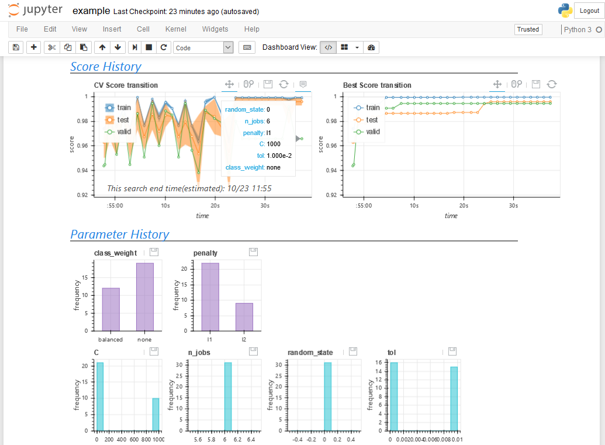

cvopt API Reference¶
cvopt(cross validation optimizer) is python module for machine learning’s parameter search and feature selection, integrated visualization and archive log. This module has API like scikit-learn cross validation class and easy to use.
In Data Science’s modeling, sometime would like to * use various search algorithms on the same interface. * optimize parameters and feature selections simultaneously. * integrate log management and its visualization into search API.
To make these simpler, cvopt was created (GitHub).